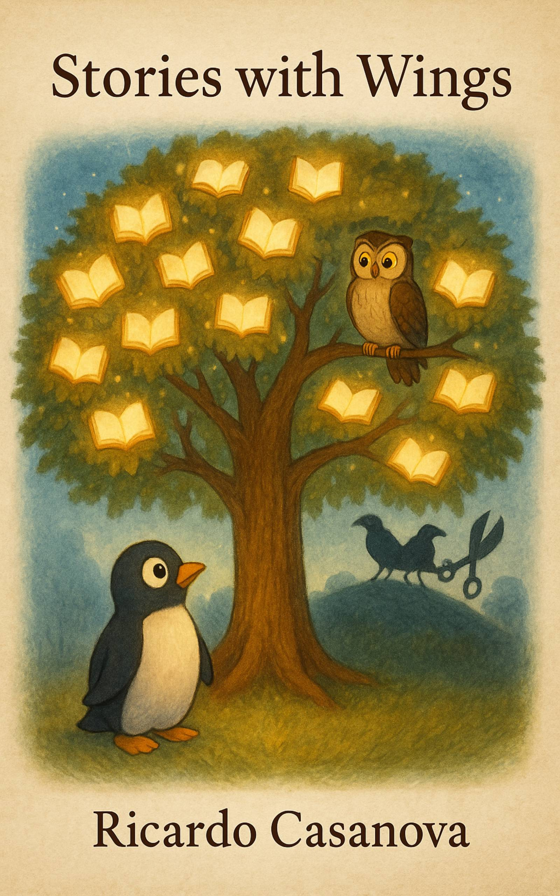
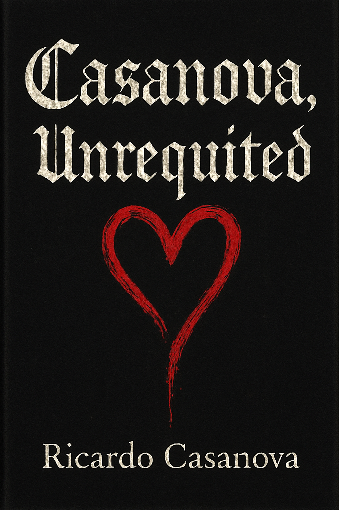

Toasty Media presents
Ricardo Casanova
AI GTM, data, ML, IoT/M2M, executive adoption, and two decades turning emerging technology into trust.
View Ricardo profile
Toasty Media presents
AI-era media, executive signal, books, and interview-led projects from Ricardo Casanova.

Current focus
Toasty Media presents
AI GTM, data, ML, IoT/M2M, executive adoption, and two decades turning emerging technology into trust.
View Ricardo profileCurrent series
Conversations with founders, researchers, investors, and operators translating AI change into practical leadership.
Show format
A flexible interview format that can continue as a show under the Toasty Media umbrella.
Toasty Lit

Executive communication
A high-status communication framework for executives, founders, and leaders.
Bonus materials
Children's
A real Toasty Lit title with a public Amazon path from the existing site.
Buy on Amazon
Creative
Reserved as a creative book property under Toasty Lit, without turning it into a separate brand.
Production platform
A browser-based interview studio for clean guest onboarding, live conversation control, sound cues, and the future recording-to-publishing workflow.
Reusable media system
Disposable rooms, clean guest flow, and architecture prepared for isolated local tracks.
Episode folders designed for safe Google Drive upload, verification, and temporary local cleanup.
Future FFmpeg recipes for full video, audio podcast, clips, transcripts, and publishing assets.
Articles
Legacy article paths are preserved while the editorial system matures inside this repository.